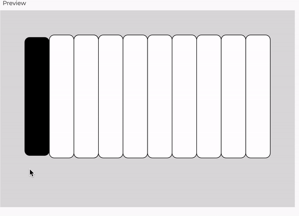

Overview
In the pivot I made while creating my final project, I decided to switch gears and focus on building a comprehensive web "piano" using the p5.js library. I really enjoyed working with this javascript library in the second mini project, and I also feel comfortable and familiar with the technology, which felt like a better starting place for my final project then trying to jump off the deep end with a new web tool that I was not nearly as familiar with. For the prototype, I made a bare-bones replica of the piano before I refine it. There is multiple aspect of user feedback as they interact with the keys.
Project Scope
I definitely changed the scope of my project a lot from my proposal to this first prototype. In fact, I changed the entire premise of my project, but I realized that I I definitely theoretically bit off more than I could chew with my inital proposal. When I started to try and set up the Strava API, I realized that gathering the types of responses I wanted was going to be difficult since I only had a limited amount of times I could make requests, I had to make different access keys and tokens, could only access certain data, and was going to have a hard time transforming that data into a structure that could be read by the chart.js and turned into a graph. I made the decision to switch and make my project with with p5.js was founded in my familiarity with the library and my confidence that I could expand and achieve deeper complexity with the library.